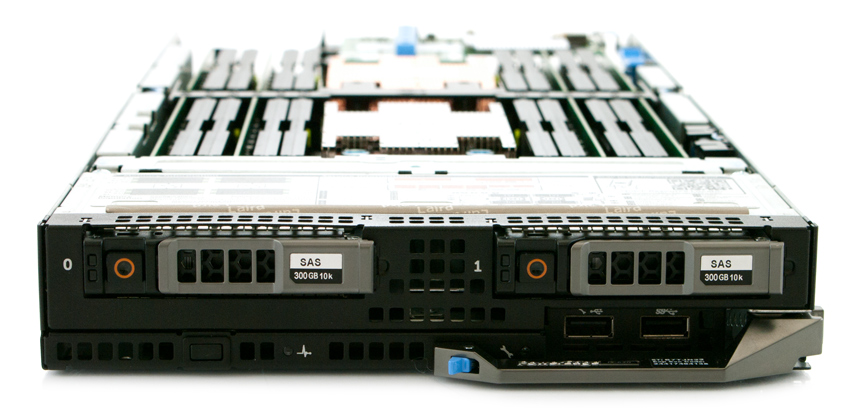
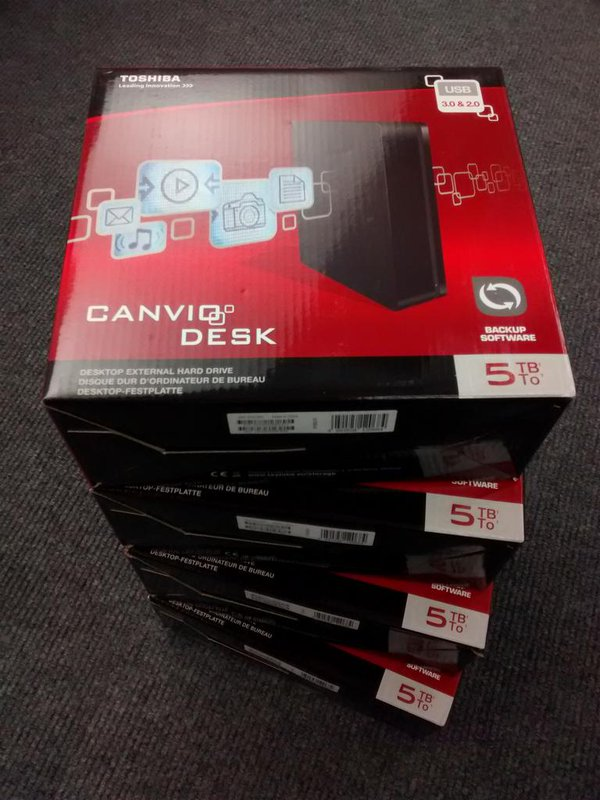
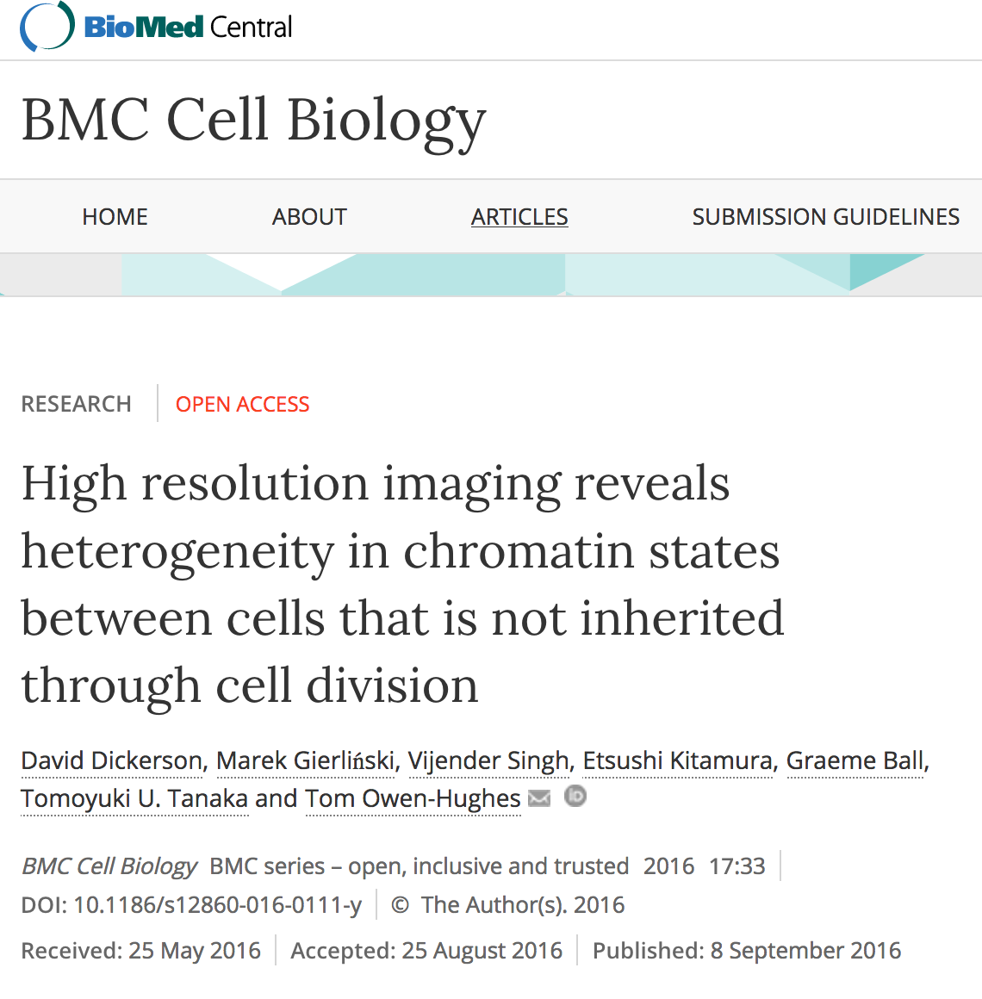
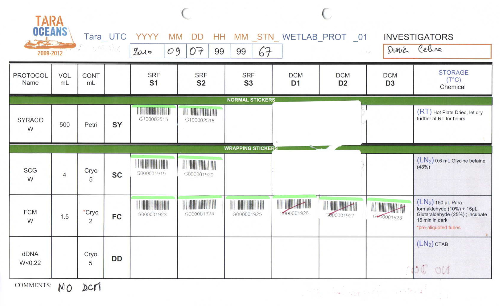
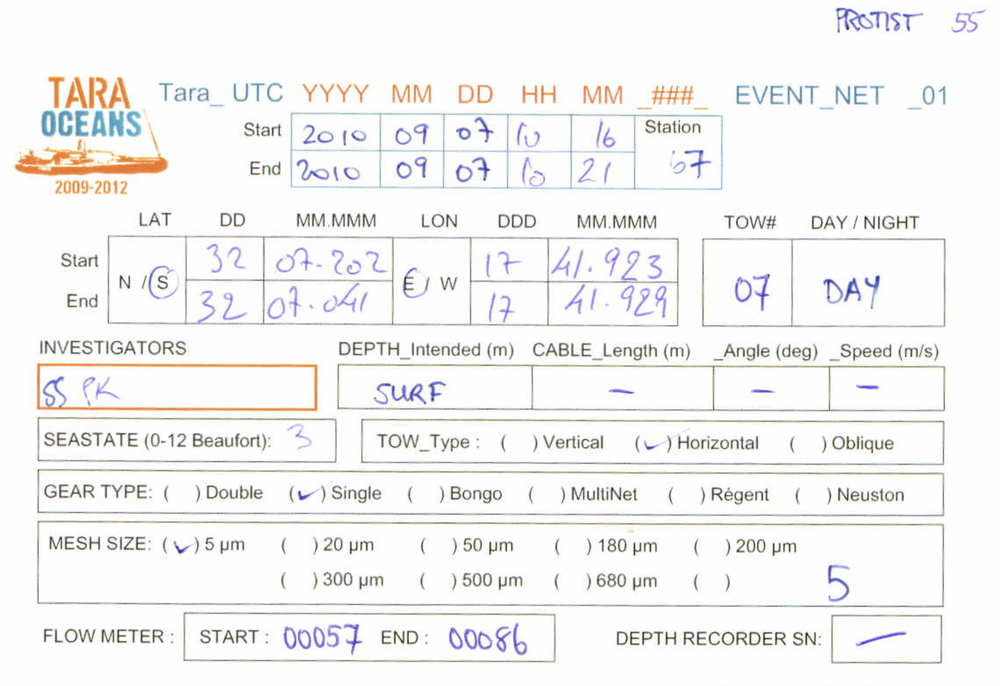
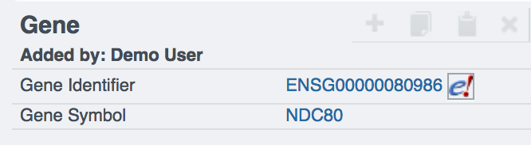
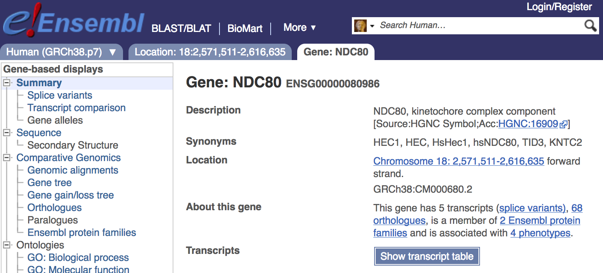
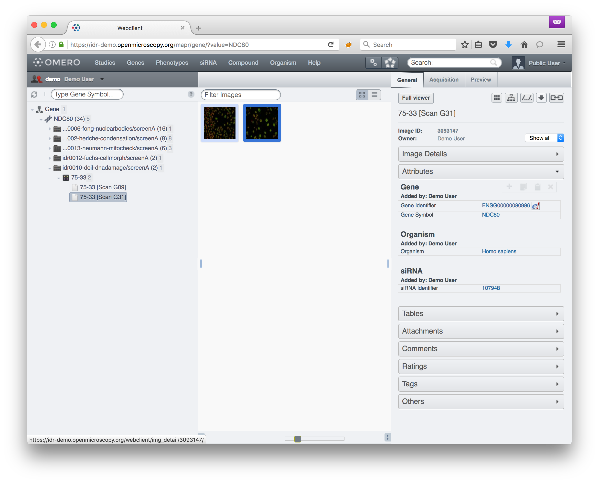
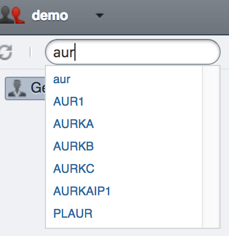
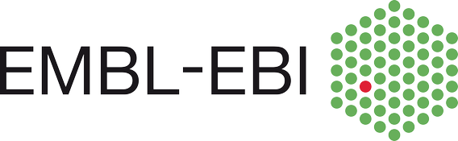

The Image Data Resource
Simon Li
GRE seminar, 6 December 2016
Overview
- Why did we build this?
- How did we create it?
- What can you do with it?
The Image Data Resource
Why did we build this?
Open science: Open access + Open data


Open science: Open access + Open data
- Reproducibility
- Re-use / re-analysis
- Combine with other data sources
Open science: Open access + Open data
Problems with imaging data
- Storage and management
- Discoverability
Contextual metadata is critical
How did we create it?

The Image Data Resource: in numbers
- 25 published studies
- 42 TB data
- 14 million files
- 1 million experiments
- Computational resources:
- 32 CPUs
- 128 GB memory

The Image Data Resource: data management
- All studies are curated
- Data is arranged in a common layout
- Cross referenced with:
- External resources
- Other IDR studies

What can you do with it?
Browse the data

External links: studies

External links: logbooks


External links: genes


Internal links: genes

IDR: A curated collection of diverse cross-referenced studies
-
Compare genes and phenotypes across different studies/experiments using MAPR, a new OMERO.web application.
- Genes (19,598)
- Phenotypes (151)
- siRNAs
- Compounds
- Organisms
Genes

Phenotypes
- Elongated cell phenotype
-
 S. pombe (idr-0001 Sysgro)
S. pombe (idr-0001 Sysgro)
-
HeLa (idr-0008 Actinome)
-
HeLa (idr-0012 CellMorph)
- Elongated cell phenotype
-
S. pombe (idr-0001 Sysgro)
-
HeLa (idr-0008 Actinome)
-
HeLa (idr-0012 CellMorph)
Phenotypes in the IDR
The Image Data Resource: in numbers
- 25 published studies
- 42 TB data
- 14 million files
- 1 million experiments
- 19,598 genes
- 151 Phenotypes
Analysis platform
Next steps
- Open infrastructure: Build your own IDR
- https://idr-demo.openmicroscopy.org/about/deployment.html
The IDR team
 Jason Swedlow
Jason Swedlow
Josh Moore
Simon Li
Eleanor Williams
 Gabriella Rustici
Gabriella Rustici
 Aleksandra Tarkowska
Aleksandra Tarkowska
 Richard Ferguson
Richard Ferguson
 Simone Leo
Simone Leo


Alvis Brazma
Ugis Sarkans
Simon Jupp
Tony Burdett

Rafael Carazo-salas
Bálint Antal
Anatole Chessel